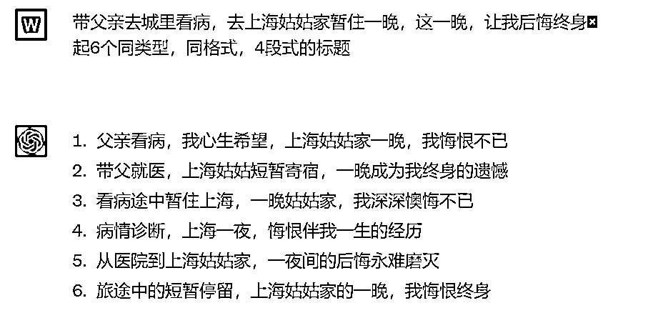
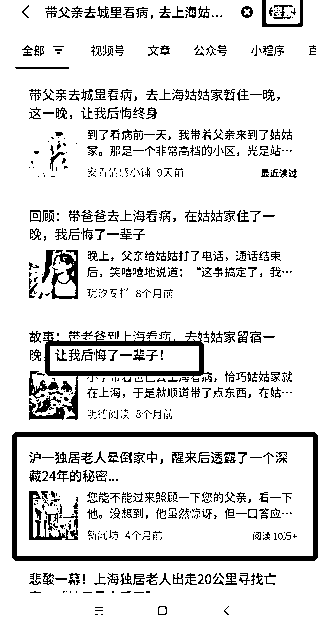
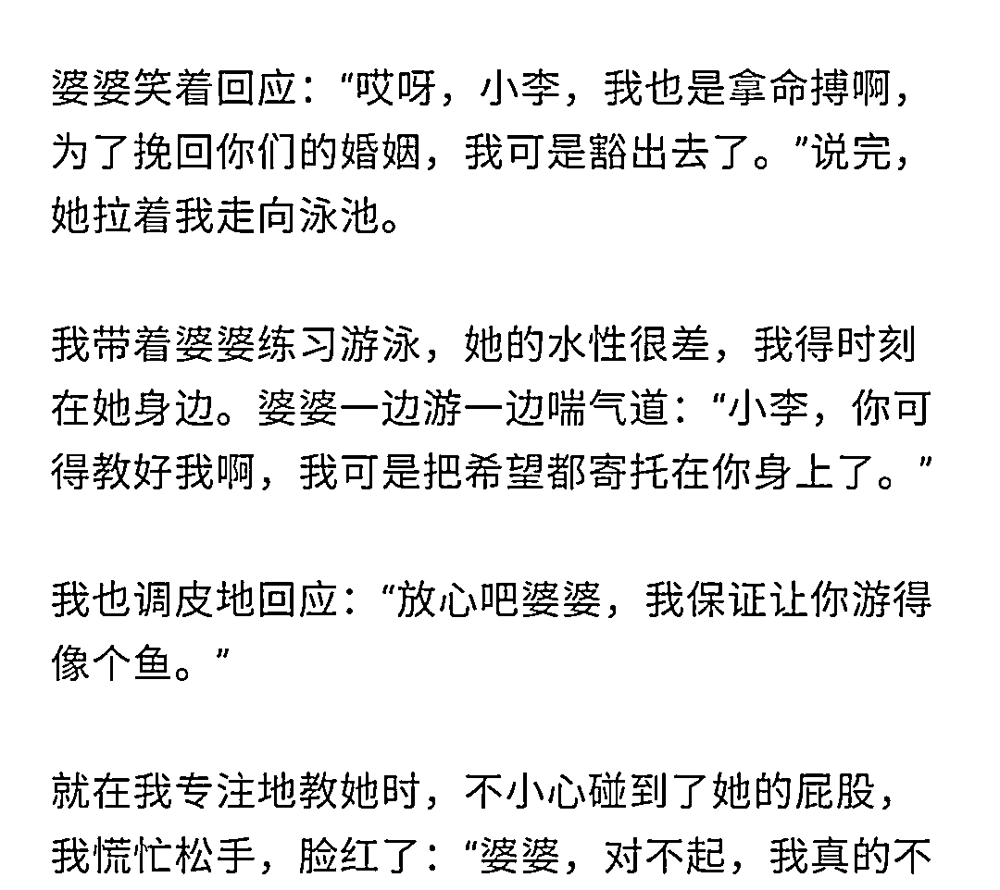

来源：https://xv6gqna2qk.feishu.cn/docx/At6WdfFhho8M9hxkqc3cjA0ZnIc
hello，大家好，我是惠惠，之前是百家号头条文章作者，4月开始用gpt 写情感文章，7天写出2篇10万＋
但是我是个非常社恐+懒癌，就是自己默默做事，这次收到小伙伴的鼓舞，让我意识到一个人走得快，但是一群人才能走得更远
这次来分享下我用ai写文章的心得，我会分别从用gpt写文章不知道去哪里找题材，标题起了一个小时，结果完全不吸引人，gpt写的文章太差劲，和一直不入池，心态如何调整，这几方面展开讲一下我踩的坑，以及如何优化，希望可以帮到感兴趣的小伙伴。（晒下其中2个号的成绩）
先说我遇到的问题：
我坐在电脑桌前，1个小时一篇都写不出来，因为不知道写什么，不知道到哪里找题材，找到题材却不会用！！！
组建了素材库，不会使用/使用效果差用过易撰，其他平台找素材，写了半天，打开数据一看，6个阅读
我如何解决的？
先关注情感类公众号，关注5—10个，点进去看他们的文章，这样操作后，订阅号消息一直下滑，在看一看里面，就会出现很多篇情感类文章（如下图）
往下翻会最少有10几篇，我会从中选择适合的题材，但是需要注意两点，一是文章发送的时间，二是阅读量
我会先看标题，能够吸引我，我就会点进去直接滑倒最下面看一下数据，在这些文章中筛选出5天内，5万＋以上的文章进行题材仿写
原因是大爆文你蹭一下，题材肯定不踩雷，数据打底就几千阅读，写得好可以直接5万＋，10万＋，因为同一时间能够火起来的题材都是大同小异，如果你参考的文章只有1万阅读，那么你对这类题材进行仿写，数据也不会太好
同时可以把每天写的题材都摘抄进素材库，丰富一下素材库，我建议素材库的使用是你最起码看100篇以上的情感类文章，再自行从素材库里面组建题材，这样比较稳妥。
素材库如何搭建，大家可以看航海课程，小女子老师写的组建素材库，非常实用，（如下图我的素材库）
问题：起标题花了半小时，不会起吸引人的标题，起的标题自己都不想点进去看，起标题时间太长
我如何解决？
例：带父亲去城里看病，去上海姑姑家暂住一晚，这一晚，让我后悔终身给gpt发送指令如图（我这个是gpt3.5）

最后加上年龄或者换个称呼标题就有了：带父亲去城里就医，去上海姨妈家短暂居住，这一晚，成了我终身的遗憾
把标题打到微信搜索栏，点进去搜索，会有很多关键词和同类型标题（下图红框），拼凑到一起就可以了
例：带父亲去城里看病，去上海姑姑家暂住一晚，这一晚，让我后悔终身改：带父亲去北京看病，到北京姑姑家住了一宿，这一晚让我后悔了半辈子！
（实在不会拼凑，可以关键词照抄，加年龄换称呼改地区，比如姑姑改成小姨，姨妈，姑妈，地址北京上海广州，）
不仅如此有的时候还会有另外的狗血10万＋故事收获（蓝色框框）

（随便举了一个标题例子，有的时候我会两种方法结合来起标题）
最开始我和小伙伴一样，用gpt2个小时写出一篇文章，而且这一篇文章的质量还不如自己写的，耗时耗力
问题：用gpt写的文章字数不够/很流水账/故事不现实/不够吸引人
一：这段内容没写完，它就不写了，可以把没写完的内容复制一下，然后加上这段内容没写完，请继续，它就会继续了。（下图）
二：可以把不符合要求的内容扩写一下，字数就够了，指令如下“需要扩写的内容”请扩充这部分内容，要有故事发生的具体细节，有对话，有动作和神态描写，有情绪，写一下（你的具体需求可以给它）
我从我的10万＋爆文中截取了一个片段（下图），可以发现我的文章其实主要采用的就是语言描写，心理描写，动作和神态描写，句子大白话，有情绪，语气真诚真实，这几个要素不断发送给gpt,它就能越写越好了这里有个小tip（记住gpt 只是个工具，我们需要的是学会使用说明书，用更精确的语句命令他，它就会被调教得越来越好）

gpt它首先并不太清楚我们国内的家长里短，这个时候就需要我们去教会
所以我们自己要先清楚如何是好故事，在初期我们需要不停地去看情感爆文（先从头到尾看50篇情感文章），了解其中的故事结构，在gpt写的不合理的时候，我们去教导它，更改它，不停训练就会逐渐变得合理。
下面是我要求它更改大纲的指令
我参加了很多gpt写作的社群，我看到很多小伙伴说自己连续更新了1个月还没有入池，这里我把自己调节心态的方法分享给大家，我自己写了5个号，5个号10天内全部入池
因为我自己同时做了5个号，文章风格标题都大差不差，但是有的3天入池，有的9天入池，这个就是概率问题，有的就是入池快，有的入池慢，这个完全不是由自己掌握的因素，不需要焦虑，用通俗的话来讲就是着急没用，可以把目光放在可以自己掌控的地方。
想要冷启动的小伙伴可以看一下5.30Adrian老师分享的文章
在我初期没有入池的账号，我会把自己写的文章和那些10万＋的文章，进行1比1分析
包括什么时候主人公介绍，什么时候第一个挫折，什么时候第二个挫折，标题上的悬念在第几段揭秘，我会1比1地摘抄核对，找出自己欠缺的部分，优化内容，
看到自己的文章在变好，内心也会得到满足，有的时候努力本身就是一种正反馈。
我的分享结束啦，希望大家篇篇10万+